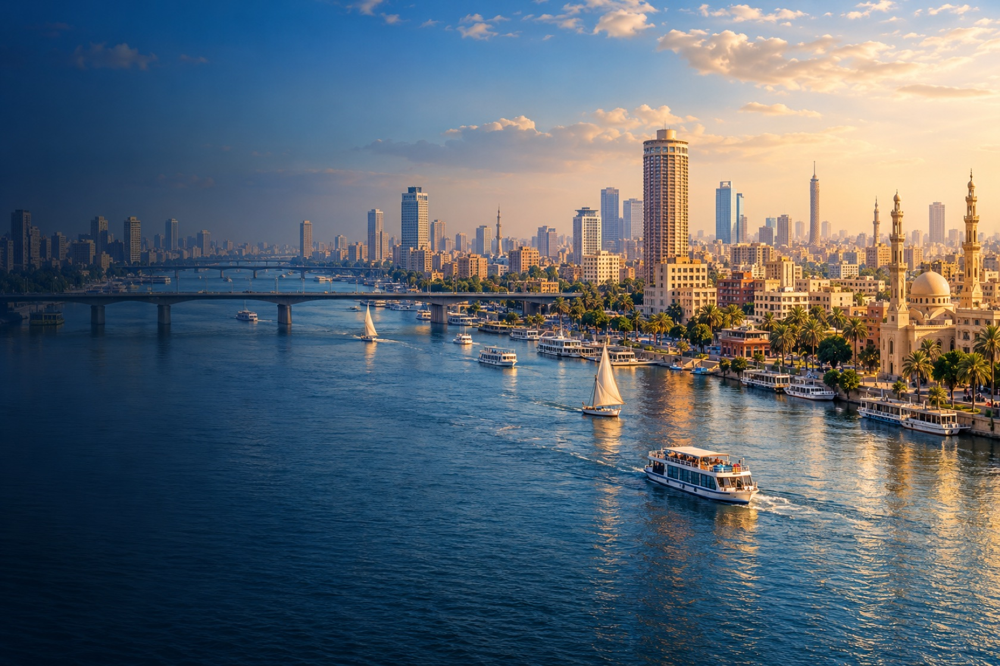

Da monarquia à república
O Egito moderno passou por transformações políticas profundas. Em 1922, o Reino Unido declarou o reconhecimento da independência egípcia, mas manteve influência em questões importantes. Em 1952, uma revolução encerrou a monarquia; a república foi proclamada no ano seguinte.
O Canal de Suez, inaugurado no século XIX, liga o Mediterrâneo ao Mar Vermelho e é uma rota estratégica para a navegação. Depois de ficar fechado desde a guerra de 1967, reabriu ao tráfego internacional em 1975.
O antigo e o contemporâneo se encontram
A população do Egito não vive em um cenário parado no tempo. Pessoas estudam, trabalham, criam arte, praticam religiões diversas e participam de uma sociedade moderna. Museus e sítios arqueológicos são parte de uma história ampla, que inclui também tradições árabes, islâmicas, coptas e muitas experiências regionais.

Uma pergunta para conversar: como podemos admirar monumentos antigos e, ao mesmo tempo, conhecer as pessoas e os desafios do Egito de hoje?